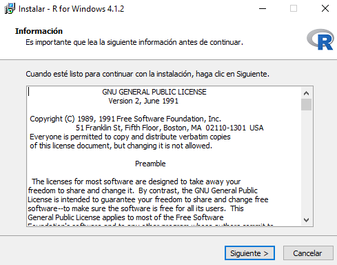
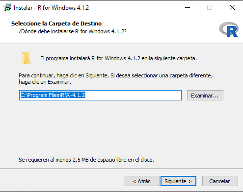

Tutorial de instalación de R y Rstudio
Windows
Instalación de R
La instalación requiere Windows 10 y un espacio de disco de unos 150 MB.
Hemos creado un link para que sea un poco más fácil. Así, puede instalar R clicando en o entrando en la página de y clicando en Download R for Windows (este link es el mismo que indicamos antes).
Para que comience la descarga del programa se solicitará una carpeta para guardar el ejecutable que instalará la aplicación.
A continuación, deberá comenzar el download del archivo R-4.1.0-win.exe. Ese archivo contiene la última versión de R, que se va a instalar en su computadora.
Finalizada la descarga, ejecuta el archivo .exe y haz clic en el botón “Siguiente” hasta que el proceso se complete. De esta forma la instalación sigue una configuración padrón.
Prima "OK" o "Siguiente" hasta que la instalación se complete.


¡Atención!
Puede elegir las opciones 32 bits o 64 bits, de acuerdo con el sistema operativo de su computadora. Si tu sistema es de 32 bits, elija la opción 32 bits exclusivamente, pero si su sistema es de 64 bits, puede elegir esas dos opciones (default) o solamente la opción 64 bits. Haz clic mejor aquí para obtener más información que pueda ayudarte.
¡Bien hecho!
Ahora tiene R instalado en su computadora. Lo siguiente es instalar Rstudio, una interfaz gráfica amigable que te facilite el manejo de R.
Instalación de Rstudio
Para obtener la versión gratuita de RStudio para Windows, haga clic en o acceda a la página de download.
Si tiene curiosidad por conocer más sobre el IDE de RStudio y ver las otras opciones de descarga, puede visitar la página del software.
Desinstalando el R
El programa R puede ser desinstalado de su ordenador en cualquier momento. Normalmente, podrá desinstalar R y RStudio a través del Panel de Control de Windows. Para eso, abra el Panel de Control y haga clic en “Programas” >> “Desinstalar un programa”. A continuación, seleccione los programas que desea desinstalar y, haciendo clic con el botón derecho del mouse, seleccione “Desinstalar”.
Si no fue posible desinstalar desde el panel de control, diríjase al directorio donde instaló el programa (probablemente C:Files.5) y ejecute el archivo unins000.exe.
Advertencia:
La desinstalación de R solo elimina los archivos de la instalación inicial. Sin embargo, otros archivos que se instalaron posteriormente, como paquetes o actualizaciones, no se eliminarán de su ordenador.Si todavía no puede realizar la desinstalación, puede simplemente borrar todo el directorio en el que se instaló R.
Linux (Ubuntu)
Instalación de R
La instalación de R puede ser hecha en cualquier distribución de Linux. Aquí especificaremos como se realiza la instalación de R en las últimas versiones de Ubuntu (versión igual o superior a 16.04; LTS). Puede encontrar detalles para la instalación en otras distribuciones de Linux aquí.
Para obtener los últimos paquetes de R 4.1.2, ejecute el siguiente comando según su distribución de Linux (usted puede verificar la distribución de su Linux en la guía configuraciones).
Como ejemplo, consideramos la distribución de Ubuntu xenial.
Ahora abre la lista de repositorio de ubuntu /etc/apt/sources.list con un editor de texto de su preferencia.
Como ejemplo, elegimos el editor nano (es necesario ejecutar los comandos como root o utilizando el prefijo sudo):
Copia la línea a seguir y pega en la lista del repositorio /etc/apt/sources.list.
Allí también añadirá el link mirror de CRAN de su preferencia. En , puede elegir la réplica de CRAN más adecuada (una réplica de CRAN es como un servidor, desde donde se descargarán los paquetes).
Como ejemplo, elegimos el siguiente mirror:
En este momento, su archivo /etc/apt/sources.list deberá tener un aspecto similar al de la imagen:
Hecho eso, para instalar R, es necesario ejecutar los comandos como root o utilizando el prefijo sudo:
Actualizar archivos importantes de su sistema operativo
Instala R
Instala R para desarrolladores - necesario cuando se quiere descargar paquetes que aún están en desarrollo (¡casi todos, porque los paquetes de R siempre se están mejorando!) Este punto permite compilar los paquetes desde su código fuente.
Por fin, vuelve a /etc/apt/sources.list y añade la línea la siguiente, que lo permitirá activar los repositorios que actúan como dependencias (backports):
Al final, tendrá R instalado en su ordenador listo para usarlo.
¡Bien hecho!
Ahora tiene R instalado en su computadora. Lo siguiente es instalar Rstudio, una interfaz gráfica amigable que te facilite el manejo de R.
Instalación de Rstudio
Para obtener la versión gratuita de RStudio, haga clic en su distribuidor Linux
Si tiene curiosidad por conocer más sobre el IDE de RStudio y ver las otras opciones de descarga, puede visitar la página del software.
Desinstalando el R
El programa R puede ser desinstalado de su ordenador en cualquier momento.
Para desinstalar R es necesario ejecutar el siguiente comando, como root o utilizando el prefijo sudo:
Mac OS
Instalación de R
Puede instalar R entrando en la página de y haciendo un clic en Download R for macOS. Elija el archivo de instalación según la configuración de su ordenador y su sistema operativo.
¡Bien hecho!
Ahora tiene R instalado en su computadora. Lo siguiente es instalar Rstudio, una interfaz gráfica amigable que te facilite el manejo de R.
Instalación de Rstudio
Para obtener la versión gratuita de RStudio para MacOS, haga clic o acceda a la página de download.
Si tiene curiosidad por conocer más sobre el IDE de RStudio y ver las otras opciones de descarga, puede visitar la página del software.